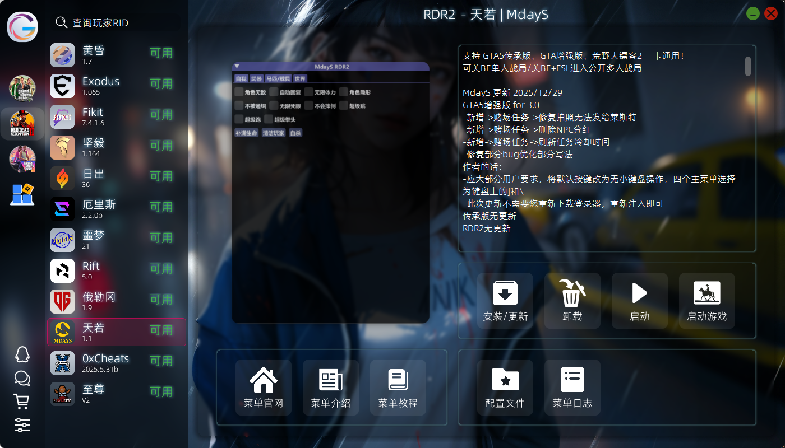

MdayS 使用教程
MdayS 菜单注册、下载和使用详细教程
前言
温馨提示
- 保存好自己的激活码跟注册的账号密码, 若丢失无法找回后果自负
- 本教程仅做正常步骤演示, 根据教程操作出现问题优先联系你的卖家解决
- 请仔细阅读所有内容与提示,遇到问题尝试先自己解决 (如借助 AI 工具)
- 教程可能具有时效性,若不适用请及时联系我
菜单状态
必备环境
- 完成RDR2 通用设置
- 关闭所有杀毒软件 (如确认已关干净请无视) /
关闭CE 等调试软件/ 关闭游戏内覆盖 (N卡/微星小飞机/游戏加加/KOOK/Oopz/Discord/ReShade等) / - 关闭Windows内核隔离
- 安装运行库合集
- 运行一次懒人脚本 (若曾运行过请无视)
下载
信息
小贴士
永远养成一个好习惯:下载任何程序不要下到含 中文/中文符号/奇怪字符 的文件夹中,这可能导致部分程序运行不了;并建议将单个程序/压缩包放入单独的文件夹中,防止部分程序释放出很多闲杂文件或解压出太多文件影响整洁度
- 安装器下载
- 官方启动器下载
推荐使用银色安装器
点我下载 - 银色安装器 安装器内一键安装器启动，自动更新，方便快捷
- 具备Lua面板，一键安装众多拓展Lua脚本
- 自带中文翻译，一般安装后默认就是中文菜单
- 部分菜单自带趣味整合包（服装、地图模组、载具模组、马匹模组、人物模组等等……）
注册
启动器内注册激活：
对着所下载的安装器 右键 - 以管理员身份运行
- 安装器
- 官方启动器

从安装器内找到对应的菜单，点击安装 → 安装完毕点击启动
危险
重要提醒
- 注册任何菜单的账号密码与游戏内的完全无关,选适合你的独一无二的好记的,不建议账号密码都输入QQ号等很容易被盗的信息
- 注册任何菜单最好只使用
数字 + 字母组合, 长度在 8 位以上,尤其不要输入中文空格与中文符号, 且极少数菜单不支持英文符号 - 请自行保管好所有相关的 激活码/卡密/账号信息,请勿泄露,部分菜单没有找回密码服务,且本店没有提供相关代管业务的义务 (暂存/只是给大家的福利,请不要依赖此服务),丢失相关数据导致的任何后果自行承担
- 注册激活后,你账户的解释权归此软件开发团队所有,与我无关,请严格遵守规则 (部分需要我帮忙处理的比如更换机器码,属于附加福利的一种,因本店属于代购性质,请尽量自助完成),违反软件规则导致的任何后果自行承担 (如绝大部分菜单禁止分享/二手处理账户)
启动器内 登录并注册


危险
重要提醒
- 请
保管备份好自己的激活码以及账户信息,丢失之后无法找回!!我们不提供任何帐户保管服务! - 后续网站也不会帮备份你的激活码信息,请你自行
保存! - 注册激活之后,该账户与我们再无关联,所有的账户信息,均由你个人单独进行维护和使用,请自觉遵守各个菜单规则!
注入
确保游戏已经打开并在启动器内 登录并选择游戏注入


如若注入失败
⚠️ 注入失败或游戏闪退解决查看以下教程,注入成功无视此条.
使用
- 大键盘
- 小键盘
F4 呼出/隐藏菜单
方向键 控制上下左右 (左右用于调数值)
Enter (回车键) 确定 & 选中功能 & 进入子菜单
BackSpace (退格键,你打字时候删字的那个键) 返回 & 退出
F1 控制左翻列表
F2 控制右翻列表
F4 呼出/隐藏菜单
小键盘 8/2/4/6 控制上下左右 (左右用于调数值)
小键盘 5 确定 & 选中功能 & 进入子菜单
小键盘 0 返回 & 退出
F1 控制左翻列表
F2 控制右翻列表
反馈
在使用过程的任何问题/想要新增的功能,都可以跟我们说明,我们会跟开发反馈